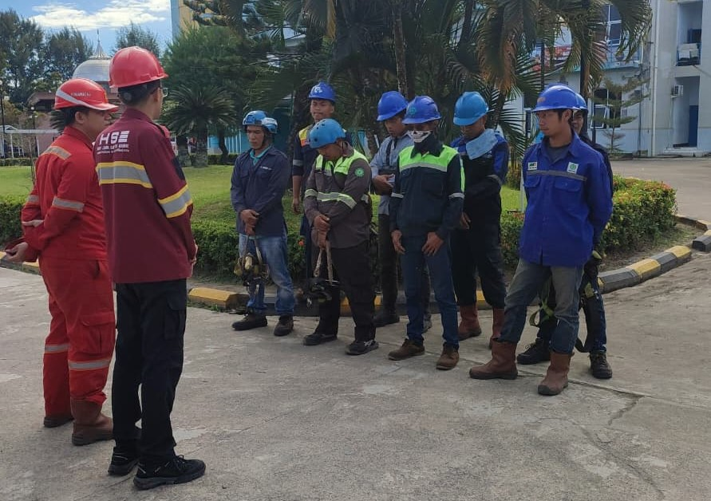
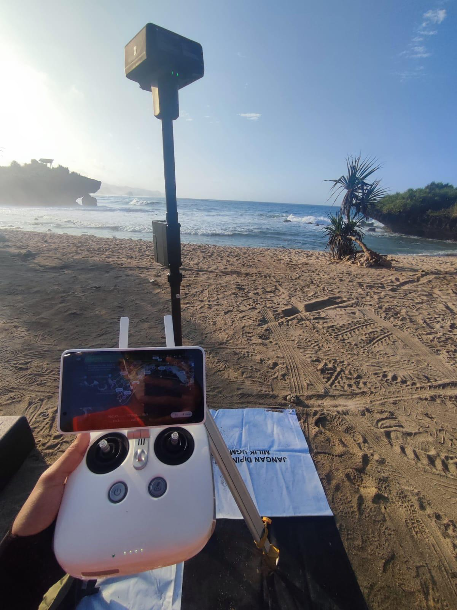
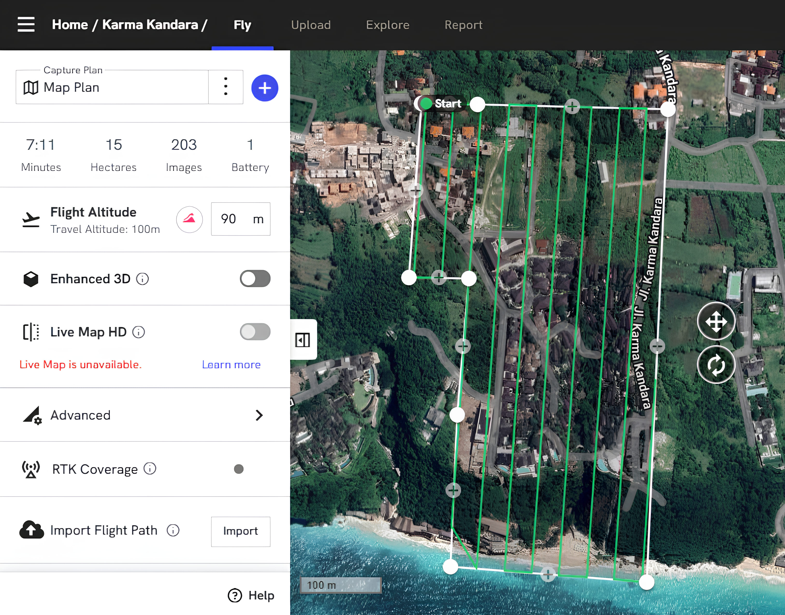

Data yang rapi sejak lapangan
Perencanaan survei, penamaan berkas, dan kontrol kualitas topologi dilakukan sejak akuisisi agar hasil akhir tidak perlu diperbaiki berulang.
GIS · UAV Mapping · Safety Officer (AK3U)
Praktisi geospasial dengan pengalaman lapangan sejak 2018: pengolahan data spasial, pemetaan foto udara (UAV), dan pengawasan K3 industri bersertifikat AK3U Kemnaker RI. Terbiasa bekerja di area operasional PLTU dengan standar keselamatan, dokumentasi, dan presisi data yang ketat.
01 — Tentang

Saya bekerja di antara dua disiplin yang saling menguatkan: data spasial dan keselamatan kerja. Di satu sisi merancang survei, mengolah citra, dan membangun geodatabase yang konsisten. Di sisi lain memastikan pekerjaan lapangan berjalan dengan izin kerja, analisis risiko, dan pengawasan yang benar.
Pengalaman lapangan saya mencakup survei terestris, akuisisi foto udara dengan beberapa tipe drone, pemrosesan ortomozaik dan DEM/DSM, hingga pengawasan K3 harian pada pekerjaan operasional PLTU. Kombinasi ini memungkinkan saya mengelola kegiatan survei yang tertib administrasi, aman, dan dapat dipertanggungjawabkan datanya.
Perencanaan survei, penamaan berkas, dan kontrol kualitas topologi dilakukan sejak akuisisi agar hasil akhir tidak perlu diperbaiki berulang.
PTW, HIRARC, dan toolbox meeting bukan formalitas, melainkan bagian dari alur kerja yang menentukan kelayakan pekerjaan dimulai.
02 — Layanan
Dua jalur kerja yang bisa ditangani terpisah maupun bersamaan dalam satu proyek lapangan.
Digitasi, geoprocessing, analisis spasial, perancangan geodatabase, validasi topologi, dan kontrol kualitas dengan ArcGIS Pro serta QGIS.
Perencanaan jalur terbang, akuisisi foto udara, penempatan GCP/ICP, ortomozaik, serta pengolahan DEM/DSM.
Pengukuran GNSS geodetik, Total Station, dan Auto Level untuk data batas, elevasi, serta validasi lapangan.
Interpretasi citra, pemantauan tutupan lahan dan kesehatan tanaman, verifikasi area, serta penyusunan peta tematik.
Pengelolaan alur izin kerja: peninjauan, pembukaan, pemantauan, hingga penutupan pekerjaan di area operasional.
Identifikasi bahaya, penilaian risiko, penyusunan Job Safety Analysis, dan penafsiran dokumen CSMS kontraktor.
Pengawasan kepatuhan APD, inspeksi area kerja harian, safety induction, dan toolbox meeting bersama tim kerja.
Kesiapsiagaan P3K, APAR, dan evakuasi, disertai dokumentasi serta pelaporan K3 harian.
03 — Proyek
Empat pekerjaan yang mewakili cara saya menangani data, alat, dan risiko di lapangan.

K3 IndustriPengawasan K3 pekerjaan operasional di PLTU Labuhan Angin, mencakup pengelolaan PTW, HIRARC, inspeksi area, dan pengawasan kepatuhan APD bersama tim kontraktor.
 GIS & Drone
GIS & Drone
Pemetaan tutupan lahan 70 ha dengan DJI Mavic 3 Multispectral RTK untuk analisis kesehatan tanaman.

Survei & PemetaanPengukuran GCP/ICP, akuisisi foto udara Phantom 4 RTK, dan analisis perubahan garis pantai.

Pemetaan UAVAkuisisi Foto udara dan Pembuatan Peta Orthopoto Untuk Kebutuhan Dokumen Analisisi Mengenai Dampak Lingkungan (AMDAL) .
04 — Pengalaman
Setiap peran memiliki catatan lingkup kerja sendiri — buka detail untuk melihat tanggung jawab, metode, dan keluarannya.
Mar 2024 — Mar 2025
Independen · Yogyakarta
Jun 2024
UGM × PT PUSRI & PTPN VII · Lampung
Des 2022 — Agu 2024
PT Adaro Multi Service
Okt 2022 — Des 2022
PT Inspirasi Multitama Andalan
2022
CV Hycon Andromeda
Agu 2021 — Des 2021
CV Buana Wirapersada
2018 — 2024
Sekolah Vokasi UGM
Apr 2026 — sekarang
PT Solid Tehnik Sejahtera · PLTU Labuhan Angin
Mar 2026
PT Arlisco Elektrika Perkasa · PLTU Labuhan Angin
Jan 2026
PT Solusi Kontrol Informatika · PLTU Labuhan Angin
Okt 2025
PT Putera Instrumenindo · PLTU Labuhan Angin
Sep 2025
CV Mutiara Buana · PLTU Labuhan Angin
05 — Keahlian
06 — Kontak
Ceritakan lingkup pekerjaan, lokasi, dan tenggatnya. Saya akan merespons dengan pendekatan kerja serta kebutuhan alat dan personel.
[email protected]